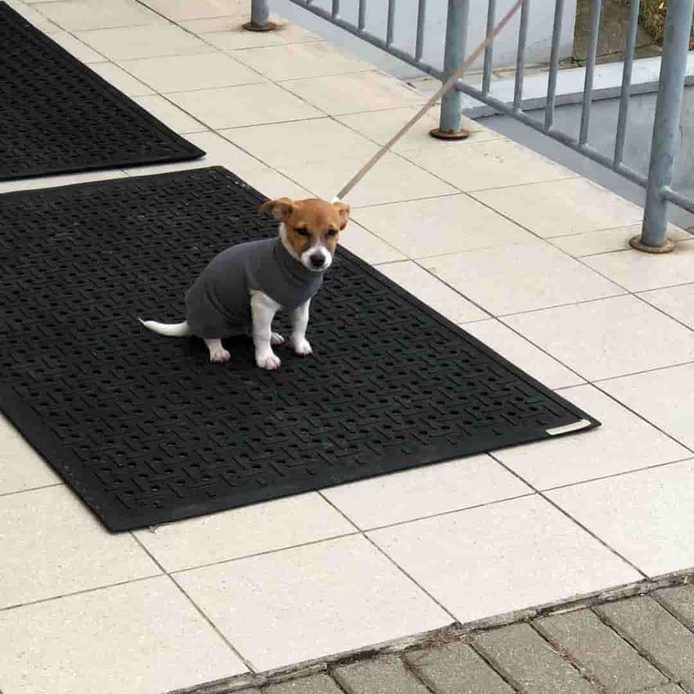
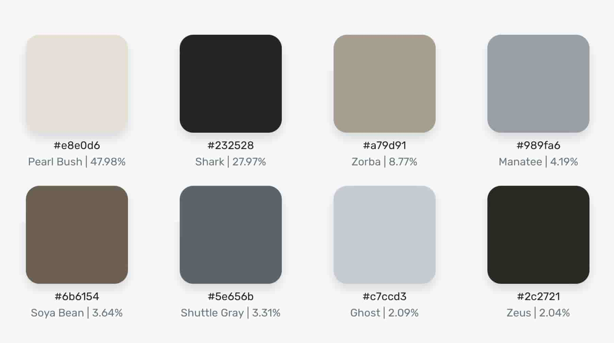
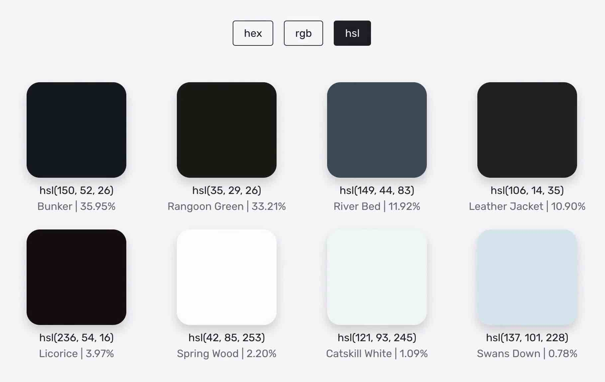

Generowanie palet barw z obrazu
Aktualnie wspierane rozszerzenia plików obrazu to jpg, png i gif.


Ostatnio wygenerowane palety
12 ostatnio wygenerowanych palet przechowywane jest w pliku JSON, przez co nawet po usunięciu obrazu użytkownik nie traci dostępu do wygenerowanych przez niego zbiorów kolorów.
Formaty palet
Każdą z palet można wyświetlić w trzech dostępnych formatach: HEX, RGB i HSL.

